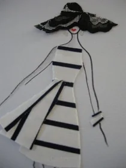
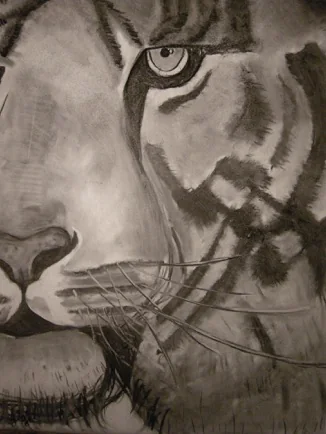

Cursus · 7 – 10 jaar
Teken- en schilderlessen voor kinderen
Spelenderwijze komen de kinderen hier met kunst in aanraking.
Elke week hebben wij een bepaald thema die wij met de kinderen bespreken en gaan tekenen of schilderen. Het kan een dier, mens, landschap, een stripverhaal of iets anders zijn.
Er wordt met verschillende technieken gewerkt: o.a. houtskool, aquarel, acryl, pastel.
Ook wordt er op verschillende materialen gewerkt: o.a. canvasdoeken, papier en hout.
De kinderen krijgen goede begeleiding, maar ook veel vrijheid voor hun eigen beeldvorming.
Deze cursus is voor kinderen in de leeftijd 7 tot 10 jaar.
Aanmelden kan het hele schooljaar door. Geen les tijdens de schoolvakantie.
Expositie in de openbare bibliotheek van Culemborg in juni 2012.

Exposities in de openbare bibliotheek en het stadskantoor in Culemborg.
Interesse in kinderen?
Neem contact op voor meer informatie of om u aan te melden.
Ook mogelijk
Andere cursussen

Voor jongeren die de wereld van kleuren, vormen en verschillende technieken willen ontdekken.

Stap voor stap een model, rok, topje, broek en accessoires leren tekenen en schilderen.

Stap voor stap leren hoe je een dier, mens of landschap tekent.